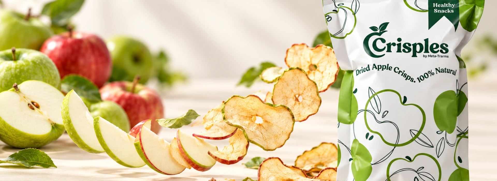
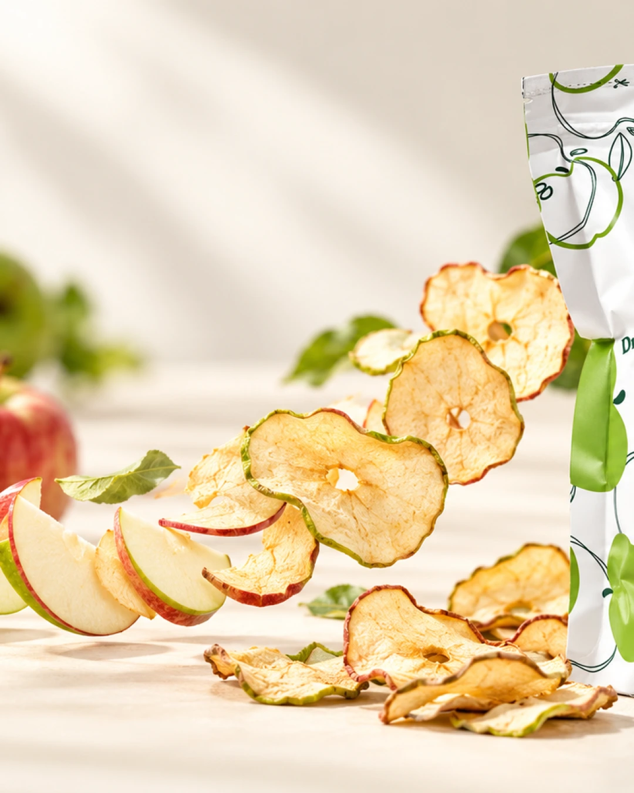

Apple first
The visual story stays anchored in apples and the real Crisples product.

About Crisples
A bright snack built around the fruit at its heart.
Crisples begins with a familiar idea: take the apple people already know and love, and give it a satisfying new texture.
The result is a light, naturally sweet crunch that feels at home in a backpack, beside a laptop, or at the center of a shared snack plate.
This page keeps the story intentionally concise until Crisples’ official company story is ready to be added.


What guides the experience
The visual story stays anchored in apples and the real Crisples product.
A flexible crunch for work, study, travel, and everyday breaks.
Pair it, pack it, or put it at the center of the snack table.